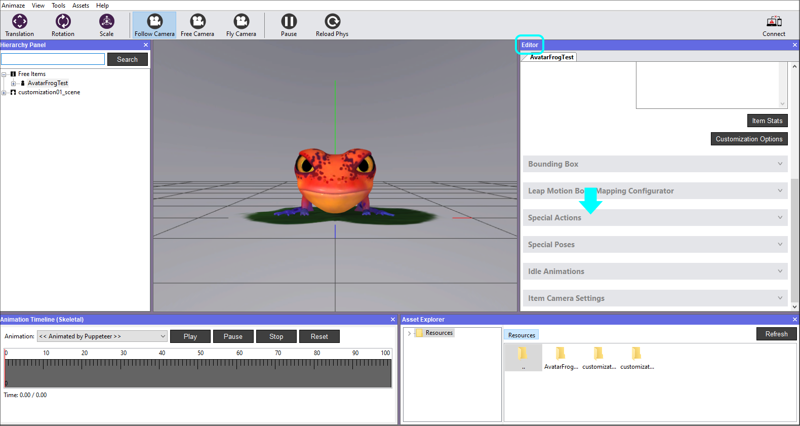
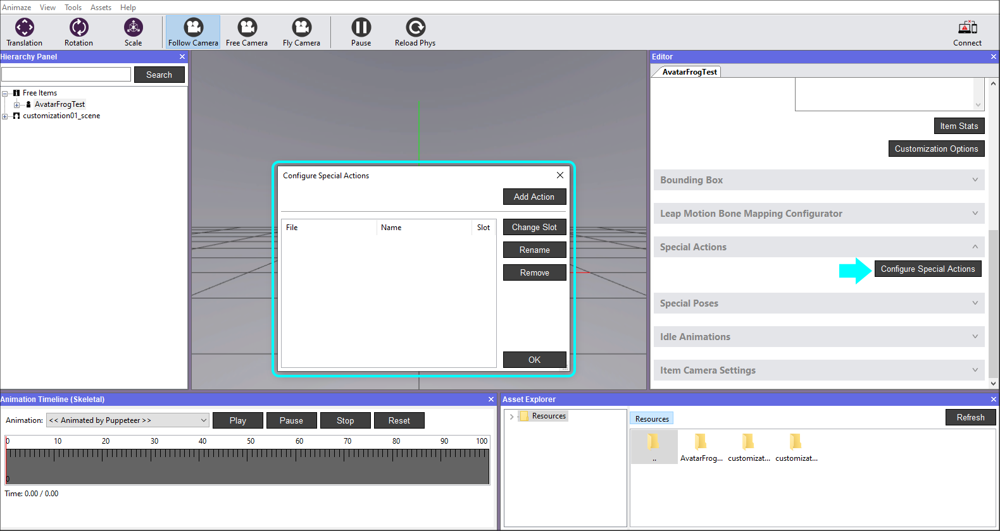
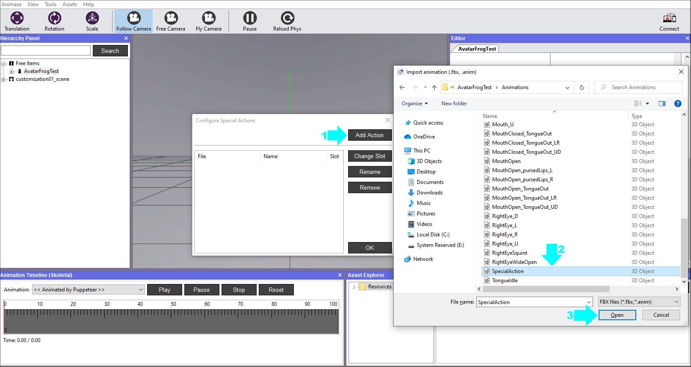
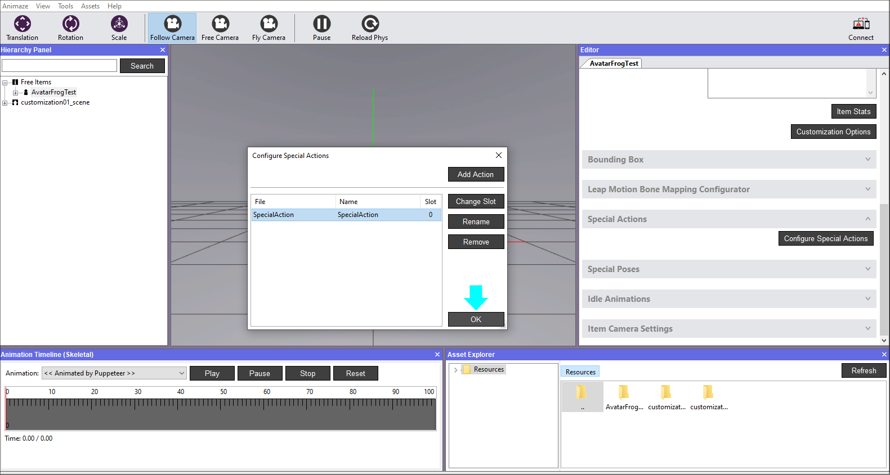
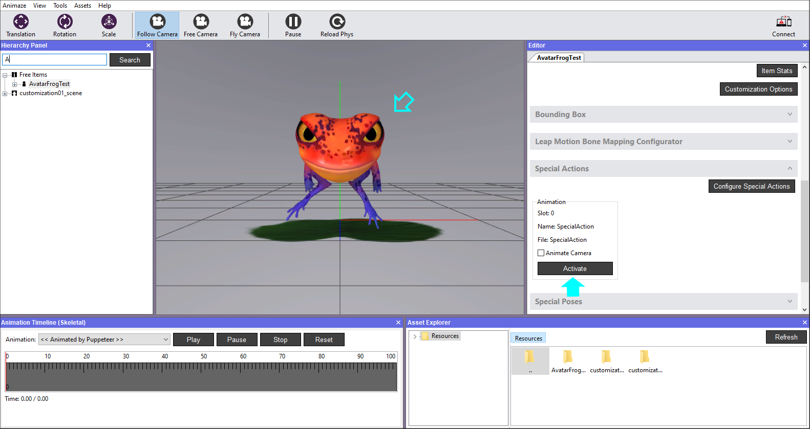
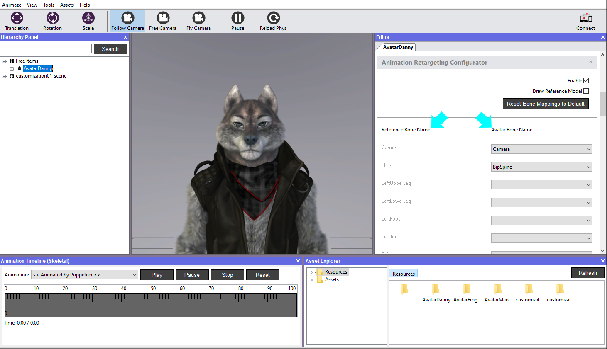
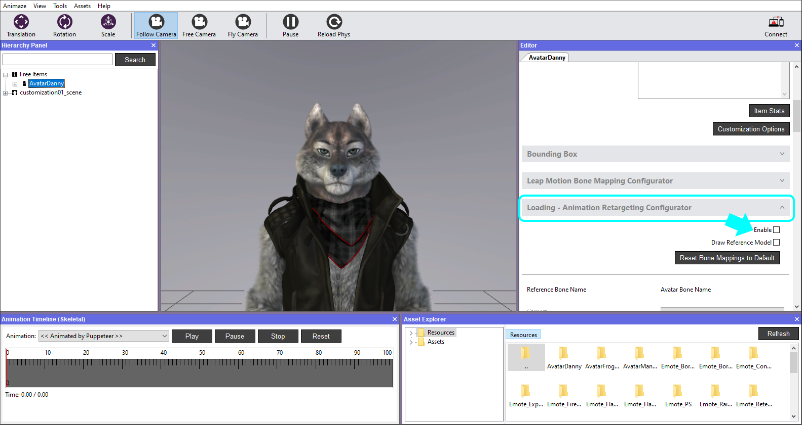
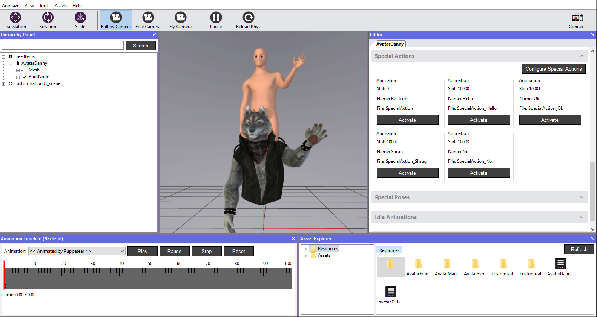
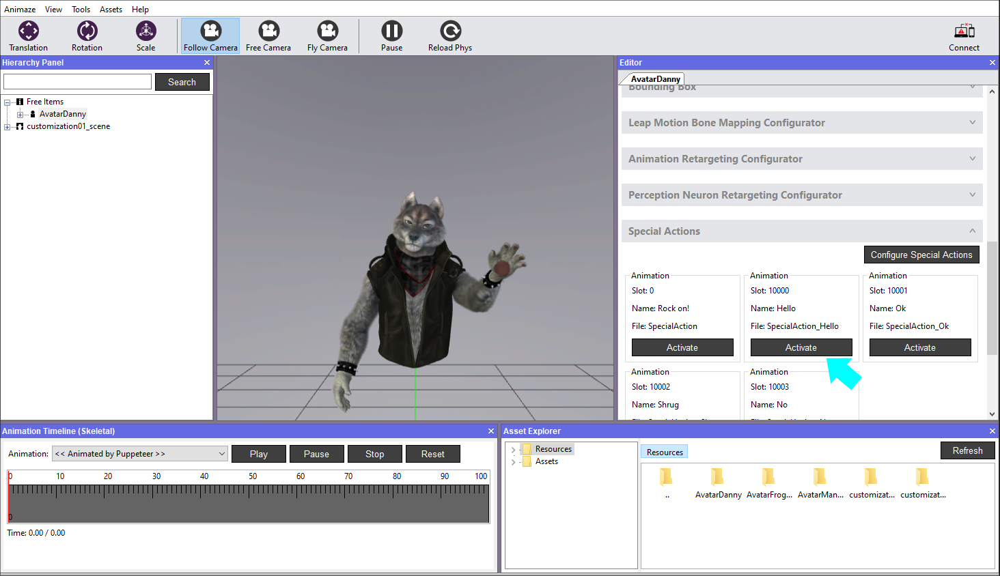

How to configure avatar Special Actions
Special Actions are user triggered animations and are not part of the face tracking retargeting system. Think of special actions as cool dance moves that you want your avatar to display.
While the possibilities of Special Actions are limitless, and must follow this rule: special actions animation should be exported for every bone in the hierarchy.
The format is *.fbx, just as all the other animations, and they can be added, rearranged and removed within the Animaze Editor.
Steps to configure Special Actions:
-
Open Animaze Editor
-
In the Editor Panel, click on Special Actions bar to expand it.

-
Clicking the Configure Special Actions button will open the configuration window.

-
Click on the Add Action button, then select the Special Action animation from the source folder that contains the .fbx files and hit Open.
Note, the location and name of the source folder will vary depending on where you saved and what you named the folder. The default name of the folder is “AvatarFrogTest”.

-
Click OK to finish adding the animation.

-
Click the Activate button to trigger the animation and watch the avatar perform the action.

-
Save the avatar in the Hierarchy Panel when you are done.

You’ve successfully configured the Special Action :)
Animaze supports a generic animation retargeting system that enables any 3D avatar in Animaze to get access to a predefined set of generic special actions, special poses, and idle animations that are delivered with the Animaze apps (iOS, Desktop and Editor), removing the need of custom creating them.
Along with the Animaze Editor, we provide the sources of AvatarManequin, a generic avatar that contains the 4 standard SpecialActions used on most of our 3D avatars (Hello, Ok, Shrug, No), and which can be loaded on your own created avatar through Animaze Editor.
If your avatar has different bones naming than suggested, you can use the retargeting feature within the Editor to match them accordingly. Mind that your right side is the left side of the avatar.

Steps to configure Special Actions from AvatarManequin:
1. Open Animaze and bring your avatar in the scene. We are using Danny for exemplification.
2. In the Editor Panel, scroll down to Animation Retargeting Configurator, expand the tab and wait until the Loading word is gone from the tab. Only then check the box Enable.

Optionally, marking the Draw Reference Model box, will trigger the AvatarManequin to appear in the scene, when the Special Actions are activated.

3. Now scroll down to Special Actions tab and expand it. The actions from the mannequin are already loaded, so you can simply activate them and watch the avatar perform them.

When you want to add a custom animation you created in your 3D software (Maya, Blender etc) on your models, you can simply add it onto them by following the steps listed on this tutorial.
Using the *.fbx file of the AvatarManequin in the >Assets directory of AnimazeEditor, you can bring any animation on all your avatars. Import it into your work software (Maya, Blender), and either use the innate retargeting system of the software in use to match them on the avatar, or simply create new ones. Export them in the mannequin’s *.fbx. Then import the mannequin in Animaze Editor andadd the actions, as per this tutorial. You can add/remove any of them at any time using the configurator.
After saving it, copy the AvatarManequin directory from Animaze Editor to Animaze desktop folder, to have your avatars play your animations.